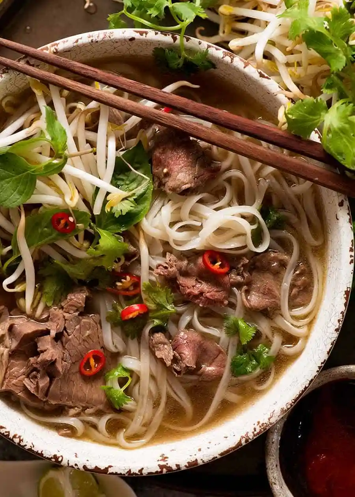

Fast Pho
A delicious, aromatic spiced soup.
This recipe makes about 6 portions.

Pho. It's tasty, it looks impressive, and most importantly - it is extremely easy to prepare.
To be quite honest, once you've mastered this recipe, you'll probably never make any other kind of food ever again. And, hey, that's OK.
Ingredients
- 2 litres good-quality fresh beef stock
- 1 onion, finely sliced
- 4cm piece fresh ginger
- 3 star anise
- 2 cinnamon sticks
- 5 cloves
- 1 tbsp palm sugar
- 5 tbsp fish sauce
- 1 hot red chilli, finely sliced, plus extra to serve
- 300g rice noodles
- 400g rump or sirloin steak, sliced thinly
- A Large handful each of beansprouts, chopped fresh coriander, fresh Thai basil (or regular basil) and mint
- Lime wedges and hot sauce of choice to serve
Preparation
- Pour the beef stock into a pan and dilute with cold water to taste. Add the ginger, onion, star anise, cinnamon sticks, cloves, palm sugar, fish sauce and chilli. Bring to the boil, then simmer for 15 minutes.
- Cook the rice noodles as per the packet instructions, then add to the simmered pot. Season to taste, then add the uncooked steak, beansprouts and herbs.
- Serve straightaway with lime wedges, plus extra chilli and some sriracha or other hot sauce, if you like.
That's it? That's it!
Return to Index